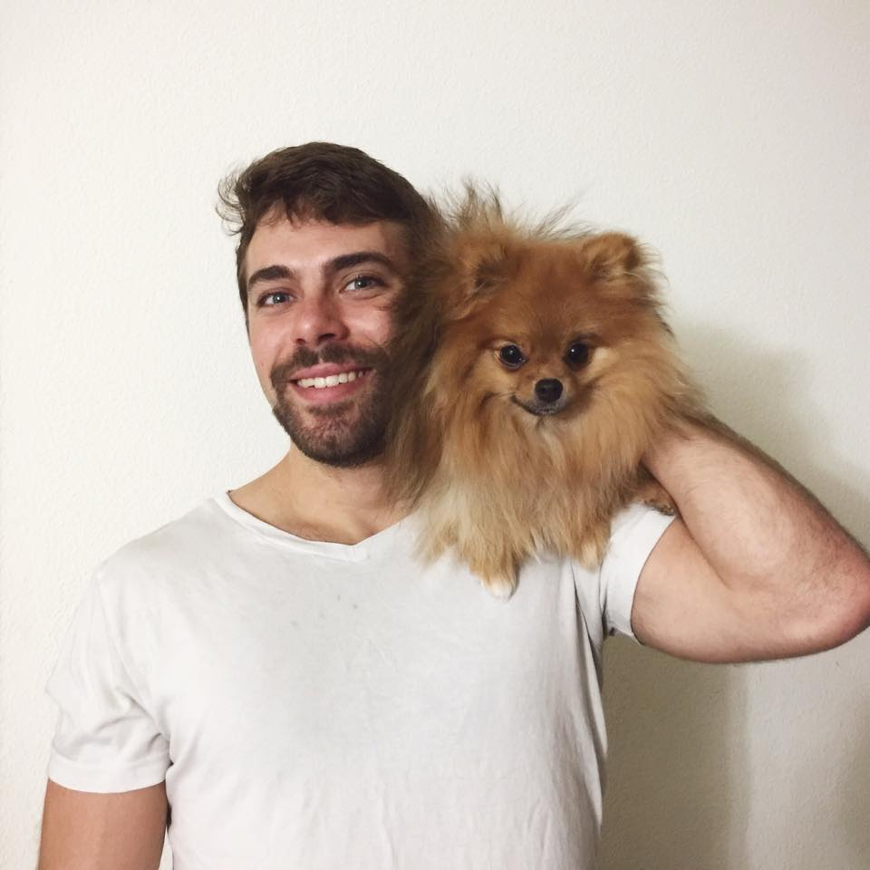

Jasper.Williams  ucsf.edu
ucsf.edu
Graduate Student

Education
2014-Present
Graduate Student
Pharmaceutical Sciences and Pharmacogenomics Program
Pharmaceutical Sciences and Pharmacogenomics Program
2010 - 2014
B.A., Chemistry and Biology
Bard College
Bard College
Research Interests
Use of synthetic biology to engineer T cells for cancer immunotherapy.
Awards
2014 Dr. Richard M. Siegel Memorial Prize in Science (Bard College)
2013 Distinguished Scientist Scholarship (Bard College)
2012-2013 Citizen Science Civic Engagement Fellowship (Bard College)
Publications
Roybal, K.T., Williams, J.Z., Morsut, L., Rupp, L.J., Walker, W.J., McNally, K.A., Lim, W.A. "Engineering T cells with Customized Therapeutic Reponse Programs Using Synthetic Notch Receptors". Cell (2016) Oct. 6; 167, 419-432.
Bartal, I.B., Murray, T.M., Williams, J.Z., Decety, J., Mason, P.; "Emotional contagion motivates helping behavior in rats." Under Review.